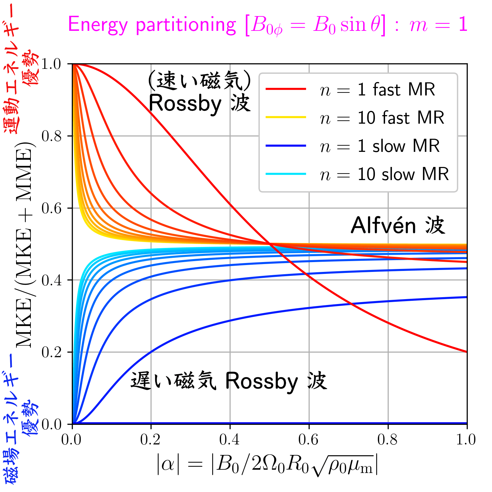
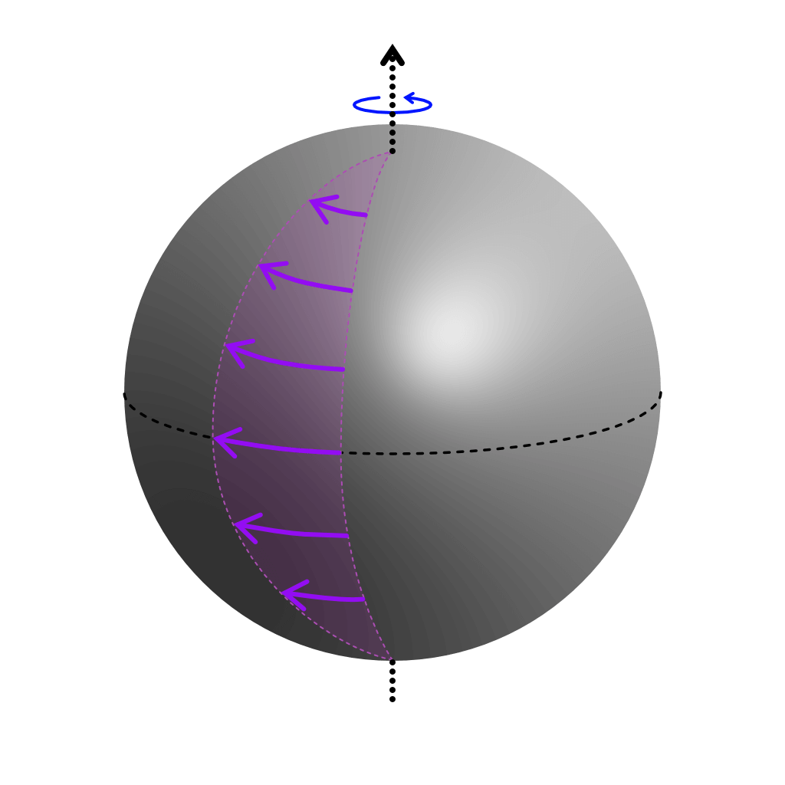
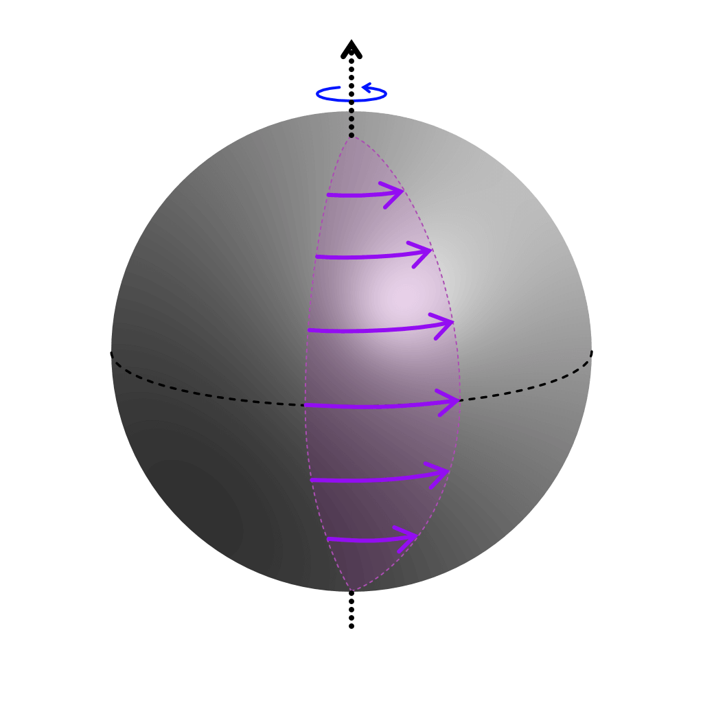
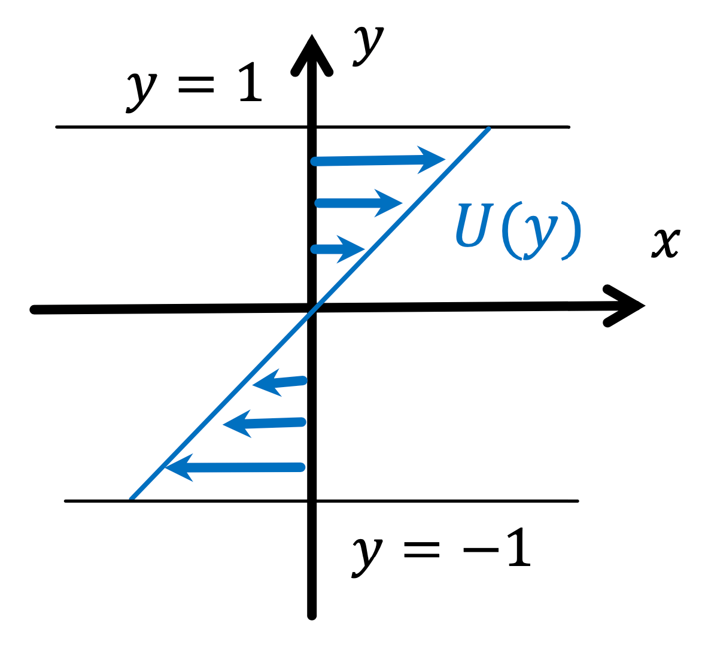
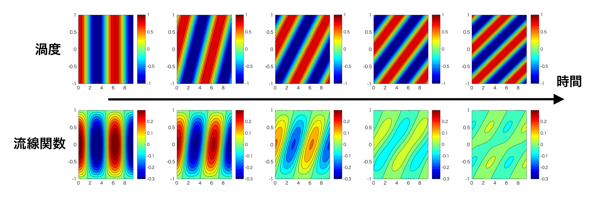
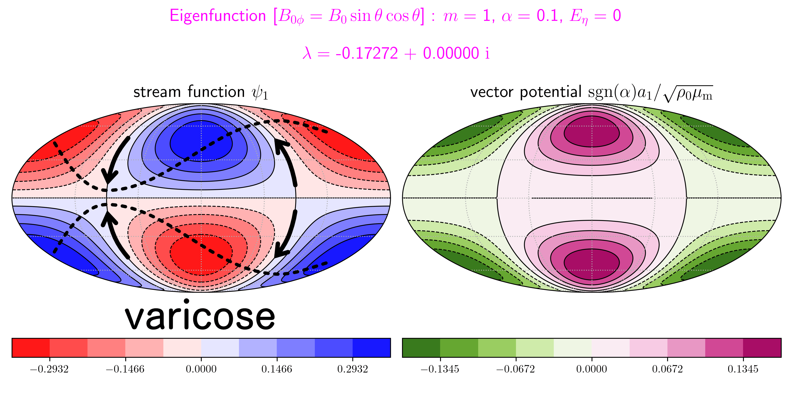
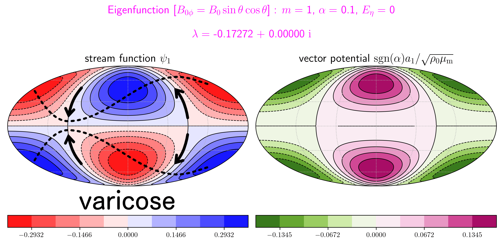
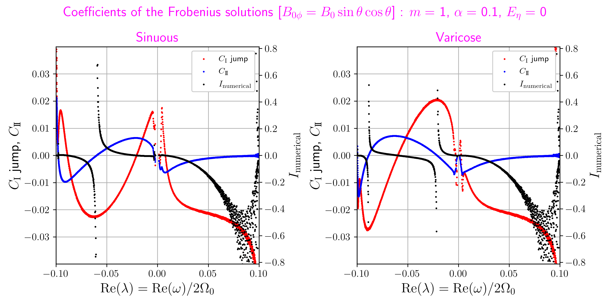

2D ideal MHD waves with continuous spectra
Two-dimensional ideal incompressible
magnetohydrodynamic waves on a rotating sphere
under a non-Malkus field:
Part I. Continuous slow magnetic Rossby and Alfvén spectra
Geophysical and Astrophysical Fluid Dynamics (予定)
中島 涼輔 (九州大学 大学院理学研究院)
吉田 茂生 (九州大学 大学院理学研究院 地球惑星科学部門)
＊esc キーを押すと overview モードになります (再度 esc キーで戻る)
＊スライド中の マークを hover すると詳細が表示されます
abstract 日本語訳
- 地球の外核最上部や太陽のタコクラインのモデルとして,
回転球面に貼り付いた 2 次元理想非圧縮 MHD の線形波動を調べた. - その薄い電気伝導性の層には, 大きさが余緯度にのみ依存するトロイダル磁場が印加されているとする.
- Malkus 背景磁場の場合は, よく知られた 2 つのブランチがある.
- 磁場が弱くなるにつれ, (retrograde) Alfvén 波 → (速い磁気) Rossby 波
- 〃 (prograde) Alfvén 波 → 遅い磁気 Rossby 波
- 非 Malkus 磁場の場合, Alfvén 波と遅い磁気 Rossby 波の離散固有値はなくなり,
その代わりに連続固有値を生じる, ということを本論文で示す. - Alfvén 共鳴に起因する臨界緯度によって, これらの離散固有値は排除され,
無数の特異的な固有モードの存在が可能になったと考えられる. - 不均一磁場中をゆっくりと変化しながら伝播する波列の理論から,
連続モードの波束は臨界緯度に向かって伝播し, やがて臨界緯度に吸収されることがわかる. - その理論から得られた retrograde (prograde) 連続モードの波束が,
赤道側 (極側) から臨界緯度に近づくというふるまいは, 数値的に得られた固有モードと整合的である. - 後の論文を含む Alfvén 連続モードのさらなる綿密な議論は, MHD における「波と平均場の相互作用」の理論と
外核最上部やタコクラインのダイナミクスについての理解を発展させるかもしれない.
「回転球面上 2 次元理想非圧縮 MHD の線形問題」とは ?
- 球面上に貼り付いた
(電気を非常によく通す) 流体の薄い層. - その球は一定速度で自転 (剛体回転).
- (ダイナモなどのより長い時間スケールの現象によって)
この流体にトロイダル磁場がかけられている. - これらを基本場として摂動が加えられたとき,
波はどのように伝播するか ? - 地球外核最上部の安定成層や
太陽内部のタコクラインのモデル.
外核最上部安定成層とは ?
安定成層入りダイナモ計算
[右] Kaneshima (2018) より
外核最上部の P 波速度分布
- 地球の外核最上部にあるかもしれない
厚さ数百 km (?) の安定成層. - 地震学により検出.
- 地球の熱・化学進化やダイナモに重要かも.
タコクラインとは ?
太陽内部の角速度分布
- 太陽内部の対流層 (上層, 差動回転) と
放射層 (下層, 剛体回転) の間の領域. - (グローバルな) 日震学により検出.
- 鉛直方向に急激な速度勾配.
$\omega$ 効果により強いトロイダル磁場が生成.
(グローバルな) 日震学
- 太陽表面の速度をドップラーで測る.
- 球対称を仮定し, 固有振動から音速分布 (と密度分布) を求める.
- p モードは浅いところ, g モードは深いところで伝わる.
- 5 分振動の励起機構は, 乱流状態の対流運動による音波放射.
- rotational splitting から自転角速度分布を決める.
p モード: 音波 (pressure)
f モード: 表面重力波 (fundamental)
g モード: 内部重力波 (gravity)
外核最上部の安定成層で「線形波動」を考えたい理由
- 地磁気に見られる波っぽい変動の成因を知りたい (e.g. Gillet+, 2021).
- 波動伝播の特徴から, よくわからない外核最上部の情報を間接的に知りたい.
- 太陽にも波みたいな周期的変動がいっぱいある (e.g. Zaqarashvili+, 2021).
西方 (東方) 移動
e.g. Finlay & Jackson (2003), Dumberry & Finlay (2007)
鉛直磁場の非軸対称成分
60 年変動
e.g. Yokoyama & Yukutake (1991), Roberts+ (2007) [PDF]
地磁気変動から推定された
コア表面の帯状流
赤道域の変動
e.g. Chulliat+ (2015)
地磁気の永年加速 [$\mathrm{nT/yr^2}$]
高緯度域の変動
e.g. Livermore+ (2017) [PDF]
地磁気の永年変化
「回転球面上 2 次元理想非圧縮 MHD の線形問題」の先行研究
類似の研究は, それなりにあるが...
- 線形波動
-
Stewartson (1967) [PDF]＊Hide (1966) [PDF] : 最初の研究 ?
$\beta$ 面近似を用いた Hide (1966) の地磁気西方移動の説明の
正当性を確かめるために, 球面 2D と球殻で調べた.
剛体回転・一様なトロイダル磁場を仮定し, 遅い波の近似を使用.
球面 2D では, 東進.
球殻では, 高次の動径波数をもつモードなら西進になりうる. -
- 浅水系なら他にもあり (補足スライド参照).
- (Malkus 磁場など) 簡単な背景場が選ばれることが多い.
- 線形不安定
-
Gilman & Fox (1997,
タコクラインのような薄い速度勾配層を維持するには
緯度方向の運動量輸送 (e.g. Spiegel & Zahn (1992)) を引き起こす不安定が必要.
Watson (1981) では差動回転 $\bm{U}\,=\,(U_0+U_1\cos^2\theta)\sin\theta\hat{\bm{e}}_\phi$ を
Charbonneau+ (1999) では $\bm{U}\,=\,(U_0+U_1\cos^2\theta+U_2\cos^4\theta)\sin\theta\hat{\bm{e}}_\phi$ を
考えたがタコクラインでは安定.
Watson (1981) の差動回転にトロイダル磁場 $\bm{B}\,=\,B_0\sin\theta\cos\theta\hat{\bm{e}}_\phi$ を加えると不安定化.
この不安定は「joint 不安定」と名付けられている.
磁場があっても剛体回転になると安定.1999a,太陽活動周期で, 磁場が赤道向きに移動して
極性反転することを想定した
赤道と極以外にも磁場の零点をもつ
$\bm{B}\,=\,(B_0\cos\theta+B_1\cos^3\theta)\sin\theta\hat{\bm{e}}_\phi$ の場合.1999b),Gilman & Fox (1999a) と計算は同じだが
太陽活動周期で, 差動回転やトロイダル磁場の分布が
進化することを想定して
様々なパラメータで計算したもの. - ＊Spiegel & Zahn (1992), Watson (1981), Charbonneau+ (1999)
-
Dikpati & Gilman (1999),
トロイダル磁場が特定の緯度付近に局在化する場合
(バンド磁場と呼ぶ. 以前の磁場分布はブロードな磁場と呼ぶ) に
その磁場の幅を色々変えてみた計算.
バンド磁場はガウス関数で表現.
幅が狭いと, 東西波数 1 以上でも不安定になる.Gilman & Dikpati (2000),太陽活動周期で, 磁場が移動することを想定して
Dikpati & Gilman (1999) の
バンド磁場の緯度を変えた計算. -
Zaqarashvili+ (2010a)
約 160 日周期の Rieger-type periodicity を説明するために
Charbonneau+ (1999) の差動回転と
Gilman & Fox (1997) のトロイダル磁場のときの
不安定な磁気 Rossby 波を考えた.
以前の研究と異なり, 慣性系ではなく回転系で定式化している. - : トロイダル磁場入りのシアー不安定
-
- 背景場の選択はいろいろ.
「回転球面上 2 次元理想非圧縮 MHD の線形問題」に近い研究
- 線形波動
-
Bergman (1993),＊Longuet-Higgins (1968) [PDF], Braginsky (1984, 1987)
Laplace 潮汐方程式 (e.g. Longuet-Higgins, 1968) に磁場の効果を加えた.
背景磁場は双極子磁場.
さらに, 赤道 $\beta$ 面の式に書き換え, 解析的に分散関係を求めた.
ただし, Braginsky (1984, 1987) に倣って
誘導方程式の磁場の時間微分を無視したため
適切な MHD 波動が求められていない. -
Zaqarashvili+ (2007,
Schecter+ (2001) の $f$ 面 MHD 浅水波の線形波動を
中緯度 $\beta$ 面 (トロイダル磁場 $\bm{B}=B_0\hat{\bm{e}}_x$) と
球面 (トロイダル磁場 $\bm{B}=B_0\sin\theta\hat{\bm{e}}_\phi$) に拡張.
球面では, Lamb パラメータ $\epsilon=0$ (2D と等価) の場合のみ.2009,Zaqarashvili+ (2007) の球面の問題の
トロイダル磁場を $\bm{B}=B_0\sin\theta\cos\theta\hat{\bm{e}}_\phi$ にした場合.
ただし, Lamb パラメータ $\epsilon\rightarrow0$, $\infty$ の場合のみ.
$\epsilon\rightarrow0$ のとき, 東西伝播の慣性重力波と速い/遅い磁気 Rossby 波.
$\epsilon\rightarrow\infty$ のとき, 慣性重力波と速い磁気 Rossby 波は赤道トラップする.2011),＊Schecter+ (2001)問題設定は Zaqarashvili+ (2007, 2009) と同じ.
特に, Lamb パラメータ $\epsilon\rightarrow\infty$ に注目する.
トロイダル磁場 $\bm{B}=B_0\sin\theta\hat{\bm{e}}_\phi$ と
$\bm{B}=B_0\sin\theta\cos\theta\hat{\bm{e}}_\phi$ のいずれの場合でも
慣性重力波と速い磁気 Rossby 波は赤道トラップする.
一方, 遅い磁気 Rossby 波は極トラップする. -
Heng & Spitkovsky (2009),
中性子星の大気を想定.
Type I X線バーストの周波数ドリフトの説明を試みる.
一様な鉛直背景磁場を考えるが, 鉛直微分は定数倍に置き換えるので
式は Zaqarashvili+ (2007) とは大きく変わらない.
慣性重力波と速い磁気 Rossby 波は赤道トラップする.
遅い磁気 Rossby 波 (magnetostrophic モード) は極トラップする.Heng & Workman (2014),系外惑星の大気を想定.
強制や摩擦の効果など, 様々な場合について列挙されている.
球面の場合は, 赤道トラップのみ考えられている. -
Márquez-Artavia+ (2017) [PDF]＊Márquez-Artavia (2017) Ph.D. thesis
Zaqarashvili+ (2007) の球面の問題と同じだが
極限的な Lamb パラメータの値だけでなく, 幅広い範囲を数値的に調べた.
磁場が強くて東西波数 1 のとき, 極トラップした磁気 Rossby 波が不安定化.
西進の Kelvin 波 (最低次の西進慣性重力波) も新たに見つかった. - ★中島 D 論 (2020)
-
: MHD 浅水波方程式
(e.g. Gilman (2000))
トロイダル磁場が強い場合に, 浅水波方程式を MHD 版に拡張.
-
Braginsky (1993),
地球の外核最上部安定成層を想定.
地磁気と 1 日の長さ (LOD; length of day) の数十年変動を説明するために
自転軸対称な MAC (magnetic-Archimedes-Coriolis) 波を考える.
背景場は鉛直磁場 $\bm{B}=B_0\cos\theta\hat{\bm{e}}_r$.Yokoyama & Yukutake (1993),地磁気と LOD の数十年変動を説明するために
地球外核最上部の薄層を考えるが, 安定成層の効果は考慮しない.
自転軸対称な MC 波.
薄層にしたことで, MAC 波と MC 波の周波数が同程度になりうる.
背景磁場は $\bm{B}=B_{0S}\hat{\bm{e}}_z+B_{0T}r^2\sin\theta\cos\theta\hat{\bm{e}}_\phi$.
ただし, この設定では, トロイダル磁場の影響は小さい. -
Buffett (2014),
Braginsky (1993) での近似を用いず
数値的に自転軸対称な MAC 波を計算.
ただし, 背景場は一様な鉛直磁場.
コア表面流と波の線形結合をフィッティングすると
双極子磁場の数十年変動を説明できる.Buffett+ (2016),Buffett (2014) の詳細の論文.
双極子磁場の数十年変動に加え
LOD 変動も説明できるかを確かめた. -
Jaupart & Buffett (2017),
Braginsky (1993) に強制項を加えたような問題.
下方の対流が安定成層に貫入したときの
密度摂動の変化を強制とする.
強制項は安定成層入りダイナモ計算から求める.
強制の期間は MAC 波にとっては短い (インパルス的).
60 年より長い周期をもつ強制はランダムに発生.
安定成層が強いと, 対流の貫入が弱まり
層下部に振幅をもつ倍音モードが励起される.Buffett & Knezek (2018),Jaupart & Buffett (2017) と似ているが
浮力に加えて, 運動方程式では Lorentz 力
誘導方程式では誘導項を強制項としたもの. -
Knezek & Buffett (2018)＊Knezek (2019) Ph.D. thesis
有限体積法を用いたMAC 波の固有値問題.
$\bm{B}=B_0\cos\theta\hat{\bm{e}}_r$, $B_0\hat{\bm{e}}_r$, $\sqrt{B_0^2\cos^2\theta+B_1^2}\hat{\bm{e}}_r$ など
さまざまな鉛直背景磁場で計算可能.
Braginsky (1993) と Buffett (2014) の結果を再現し
非軸対称な東進する赤道波を見つけた. - : 3D 薄層
-
Zaqarashvili (2018)
赤道 $\beta$ 面での MHD 浅水波.
背景磁場 $\bm{B}=B_0\hat{\bm{e}}_x$ の場合, 遅い磁気 Rossby 波は存在しない.
背景磁場 $\bm{B}=B_0y\hat{\bm{e}}_x$ の場合, 微分方程式の確定特異点を除去するために
波の周波数は Alfvén 波周波数よりも十分大きいと近似しているため
Alfvén 波よりも遅い波を考えることは不適切である.Buffett & Matsui (2019)★中島修論 (2017)赤道域で見られる永年加速を説明するために
鉛直背景磁場の場合の
赤道波 (eMAC 波; equatorially trapped MAC) を考える.
Knezek & Buffett (2018) のように
背景磁場を $\bm{B}=\sqrt{B_0^2\cos^2\theta+B_1^2}\hat{\bm{e}}_r$ とすると
赤道で背景磁場が 0 にならないため
波の周波数は Alfvén 波周波数よりも十分小さいと近似できる.
このとき, 東進する赤道トラップした波が得られる. - : 赤道波
「回転球面上 2 次元理想非圧縮 MHD の線形問題」に近い研究
- 線形不安定
-
Dikpati+ (2004),
鉛直方向の拡散を想定した
(Newton 冷却型の) 摩擦と磁気拡散を加えた線形計算と
その不安定モードを初期値とした非線形計算.
線形計算は Gilman & Fox (1997) や
Gilman & Dikpati (2000) と同じ設定.
数値的な理由で非線形計算には
(水平方向の) 粘性と磁気拡散も入れてある. - : 2D + 非理想 MHD
-
Gilman & Dikpati (2002),
Charbonneau+ (1999) を浅水系に拡張した Dikpati & Gilman (2001a) に
Gilman & Fox (1997) のブロードな磁場を加えた場合.
基本場は Dikpati & Gilman (2001b) の方法で求める.
ただし, reduced gravity の値によっては, 低緯度で層の厚さが 0 になってしまう.
不安定モードはヘリシティをもつので, ダイナモを起こすかも.Dikpati+ (2003),Gilman & Dikpati (2002) をバンド磁場にした場合.
基本場は Dikpati & Gilman (2001b) の方法か
局所的な jet を追加してバンド磁場の磁気張力とつり合わせる
Rempel & Dikpati (2003) の方法が用いられている.
局所 jet があると不安定になりにくくなる. - ＊Dikpati & Gilman (2001a, 2001b), Rempel & Dikpati (2003)
-
Zaqarashvili+ (2010b)
太陽の準 2 年周期振動 (QBOs) を説明するために
Zaqarashvili+ (2010a) を浅水系に拡張.
磁場が弱ければ Rieger-type periodicity 程度の周期
磁場が強ければ QBOs 程度の周期になる. - : MHD 浅水波
-
Cally (2003),
Gilman & Fox (1997) の設定やバンド磁場の場合を
薄層 3D (Boussinesq 系) にした線形計算.
基本場は magnetostrophic バランスで, 鉛直構造は sin 型を仮定.
極域で差動回転よりも磁場の効果が大きく, 大きい鉛直波数かつ
東西波数 1 のとき「polar kink (Tayler) 不安定」が起こる.Gilman+ (2007),Cally (2003) とほぼ同じだが,
MHD プリミティブ方程式を使っている点が異なる.
成長率が最も大きいモードは polar kink 不安定だが
鉛直波数が大きく, 散逸の効果を受けやすい.
実際に非線形計算すると, clamshell 不安定の方が優勢になる. -
Arlt+ (2007a,
緯度方向だけでなく鉛直方向のシアーも考えて
線形計算した Arlt+ (2005) を
MHD 版に拡張したもの.
拡散も入れてある.2007b),＊Arlt+ (2005)Arlt+ (2007a) とほぼ同じだが背景場の分布が異なる.
ポロイダル磁場の影響も考えられている.
タコクライン内の磁場は 105 G という話があるが
それより弱い磁場で不安定化してしまうかもしれない. -
Kitchatinov & Rüdiger (2008),
剛体回転で Malkus 磁場と Gilman & Fox (1997) の磁場の場合.
2D だと安定で, 磁気 Rossby 波だけ.
3D だと Tayler 不安定が現れる.
鉛直拡散は, 不安定モードの鉛直構造を小さくしすぎない効果がある. -
Cally+ (2008),
Cally (2003) では, 東西波数 0 は安定としていたが
強いバンド磁場なら不安定になりうることを示した.Dikpati+ (2009)Cally+ (2008) とほぼ同じだが,
MHD プリミティブ方程式を使っている点が異なる.
磁気張力によって不安定が発生し,
Coriolis 力は安定化させる効果がある. -
: 3D 薄層
(e.g. Miesch & Gilman (2004) [PDF])
タコクラインでは, 水平シアーだけでなく
鉛直シアーなども考えたいので
プリミティブ方程式 (薄層モデル) を MHD 版に拡張.
polar kink (Tayler) 不安定
「回転球面上 2 次元理想非圧縮 MHD の線形問題」に近い研究
- 不安定モードの非線形計算
-
Cally (2001) [PDF],
Gilman & Fox (1997) や Dikpati & Gilman (1999) の
設定における不安定モードを初期値とした非線形計算.
数値的な理由で磁気拡散が入れてある.
強いブロードな磁場の場合,「clam 不安定」が起こり
磁力線が二枚貝のように開いて, 最終的に南北方向に向く. -
Cally+ (2003,
各南北半球に 2 本のバンド磁場がある場合など
様々なトロイダル磁場分布の場合の非線形計算.
線形不安定モードを初期値とする.
数値的な理由で粘性と磁気拡散が入れてある.
バンド磁場の場合は,「clamshell 不安定」は起こらず
磁力線が傾くだけの「tipping 不安定」になる.2004)Rempel & Dikpati (2003) や Dikpati+ (2003) の
局所 jet を 2D にも入れてみた線形計算と非線形計算.
浅水系と同様に, 局所 jet があると不安定化しにくい.
非線形では, 初期になくても局所 jet が自然に形成されてしまう. - : 2D
-
Dikpati+ (2017,
浅水波方程式の非線形計算 Dikpati (2012) を MHD 版に拡張したもの.
差動回転と不安定な磁気 Rossby 波の間で
エネルギーをやりとりし, 非線形振動が起こる.
これが, 約 6~18 ヶ月の変動 ("solar season") の原因かも.2018a,Dikpati+ (2017) の詳細の論文.
Dikpati+ (2003) の設定 (局所 jet なし) での
不安定モードを初期値とする.2018b)Dikpati+ (2018a) と同じだが
非線形振動のパターンの東西伝播に注目したもの.
線形計算も行い, バンド磁場の位置によって
不安定な Rossby 波の伝播方向が変化することを示した. - ＊Dikpati (2012)
- : MHD 浅水波
-
Miesch+ (2007),
Gilman+ (2007) の設定の非線形計算.
初期値は不安定モードではなく, 基本場にランダムな摂動を加える.
数値的な理由で拡散が入れてある.
ブロードな磁場では clamshell 不安定.
バンド磁場では, 初期にバンドの端で構造が細かいモード
(edge 不安定. ランダムな初期値由来で, 2D でも起こる) が
発達した後, tipping 不安定になる. -
Hollerbach & Cally (2009) [PDF]
Cally+ (2008) と Dikpati+ (2009) で考えた
軸対称な不安定モードの非線形計算.
数値的な理由で拡散が入れてある.
非線形発展により, 鉛直構造が細かくなる. - : 3D 薄層
上: clamshell 不安定, 下: tipping 不安定
[右] Dikpati+ (2018a) より
DR = 差動回転, TF = トロイダル磁場
RS = Reynolds 応力, MS = Maxwell 応力
「線形波動」と「線形不安定」の先行研究の違い
現実の地球外核や太陽内部では,
(Malkus 磁場よりも) 複雑な磁場分布をしている (はず).
- 「線形不安定」の研究では, 背景場の設定はいろいろ.
- 「線形波動」の研究では, 簡単な背景場が選ばれることが多い (なぜ ?).
地磁気観測と比較して議論するために,
より現実に近い設定で「線形波動」を考えたい.
- 背景磁場の分布の違いによって,
線形波動の性質 (周期など) はどのように変わるのか ?
ところで, Malkus 磁場とは ?
球内の MC (Magneto-Coriolis) 波.
背景磁場をうまく選ぶことで
球内の慣性波の問題 (e.g. Zhang+ (2001)) で
知られる Poincaré 固有値問題へと帰着させた.
ゆえに分散関係は, 磁場がないときの
球内の慣性波の固有振動数を用いて表現される.
磁場が強いと東西波数 1 で不安定.
円筒座標 $(s,\phi, z)$, 球座標 $(r, \theta, \phi)$
$B_0$ は定数, $R_0$ は球の半径, $\mu_\mathrm{m}$ は透磁率.
磁場 $\bm{B}$ は東西方向, 電流 $\bm{J}$ は回転軸に平行で一様.
球面 2D では $\bm{B}\,=\,B_0\sin\theta\hat{\bm{e}}_\phi$.
以下では, Malkus 磁場 ($\mathcal{B}=1$) との違いを
$\bm{B}\,\equiv\,B_0\mathcal{B}\sin\theta\hat{\bm{e}}_\phi$ と表現.
＊軸対称なトロイダル磁場の $\theta$ 依存性は
$(\ud \mathrm{P}_n^0/\ud \theta)=-\sin\theta(\ud \mathrm{P}_n^0/\ud \mu)=\mathrm{P}_n^1$
Malkus 磁場の場合の「線形波動」まとめ
分散関係 ($m=1$ の場合)
Zaqarashvili+ (2007)
Márquez-Artavia+ (2017) [PDF]
- $\lambda\equiv\omega/2\varOmega_0$
- 自転角速度 $\varOmega_0$ の $2$ 倍で無次元化した角振動数
$\lambda>0$ : prograde ($\varOmega_0>0$ なら東進)
$\lambda<0$ : retrograde ($\varOmega_0>0$ なら西進) - $m$
- 東西波数 (正とする)
- $\alpha\equiv B_0/2\varOmega_0R_0\sqrt{\rho_0\mu_\mathrm{m}}$
- Lehnert 数 (磁場/回転)
($\rho_0$ : 一様密度) - $n$
- Legendre 陪多項式 $\mathrm{P}_n^m(\cos\theta)$ の次数
Malkus 磁場の場合の「線形波動」まとめ
$m=1$ の場合
| (速い磁気) Rossby 波 | 慣性 vs. 惑星 $\beta$ 効果 | 運動エネルギー優勢 | |
| Alfvén 波 | 慣性 vs. Lorentz 力 | 運動・磁場エネルギー等分配 | 磁力線に沿って伝播 (位相速度・群速度 $=\bm{B}/\sqrt{\rho_0\mu_\mathrm{m}}$) |
| 遅い磁気 Rossby 波 | 惑星 $\beta$ 効果 vs. Lorentz 力 | 磁気エネルギー優勢 | 周期が年スケール 地上観測される地磁気変動 と関係あり ? |
- $\mathrm{MKE}\equiv(1/2)\int_{-1}^1(\rho_0\overline{\bm{u}_1^2}/2)\ud\mu$
- 摂動の平均運動エネルギー
- $\mathrm{MME}\equiv(1/2)\int_{-1}^1(\overline{\bm{b}_1^2}/2\mu_\mathrm{m})\ud\mu$
- 摂動の平均磁場エネルギー
- Malkus 磁場の場合
- $\mathrm{MME}/(\mathrm{MKE}+\mathrm{MME})=m^2\alpha^2/(\lambda^2+m^2\alpha^2)$
研究目的 と 主な結論
地磁気観測と比較して議論するために,
より現実に近い設定で「線形波動」を考えたい.
- 背景磁場の分布の違いによって,
線形波動の性質はどのように変わるのか ? - 非 Malkus 磁場では, Alfvén 波や
地磁気変動の候補になりうる遅い磁気 Rossby 波
の離散モードが消えてしまい, 代わりに連続モードが出てくる.
- Malkus 磁場と非 Malkus 磁場の何が違いを生んでいるか ?
- この連続モードは何なのか ? (物理的に意味のある解 ? ない解 ?)
Malkus 磁場の場合の「局所」Alfvén 波速度
局所 Alfvén 波速度 : $\bm{V}_\mathrm{A}=\pm(|B_0|/\sqrt{\rho_0\mu_\mathrm{m}})\sin\theta\hat{\bm{e}}_\phi$
 回転の影響を無視 ($\zeta_1$ は摂動)
ローカルな Alfvén 波速度の緯度依存性 ($\propto\sin\theta$) により,
全ての緯度の位相をそろえることが可能.
球面における一様磁場に相当.
慣性系から見たときの
剛体回転の速度分布
(球面における一様な背景流に相当)
に似ている.
慣性系での速度 $\bm{u}^{(\text{inertial})}=\varOmega_0 R_0\sin\theta\hat{\bm{e}}_\phi$
非 Malkus 磁場では
局所 Alfvén 波速度 : $\bm{V}_\mathrm{A}=\pm(|B_0|/\sqrt{\rho_0\mu_\mathrm{m}})$$\mathcal{B}(\cos\theta)$$\sin\theta\hat{\bm{e}}_\phi$
回転の影響を無視, $|\bm{\nabla}_h a_1/a_1|\gg |(\ud\mathcal{B}/\ud\theta)/\mathcal{B}|$ と近似 ($a_1$ も摂動)
初期に位相がそろっていたとしても
$\mathcal{B}$ の分だけ緯度ごとに位相速度が異なるので
時間とともに位相のずれは大きくなっていく
→ グローバルな固有モードをつくれない ?
純粋な流体力学でも似たような状況が知られている
e.g. Case (1960), Balmforth & Morrison (1995a)
 $y$ に依存する $x$ 方向の背景流 $\bm{U}=U(y)\hat{\bm{e}}_x$ に摂動を加えると,
その背景流に流されて, 摂動の形が歪められる.
しかし, そのような時間発展を (普通イメージするような) 波で表現することはできない.
このような物理を含んでいるのにも関わらず,
線形問題を考えるときは, 波型の解を仮定したい (仮定してしまう).
Van Kampen モード (連続モード)
- 無衝突プラズマ (Vlasov 方程式) : e.g. Van Kampen (1955), Case (1959), Barston (1964)
- 自己重力多体系 (Vlasov 方程式) : e.g. シリーズ 現代の天文学 第12巻 天体物理学の基礎(2)
使って計算したシアー流中の摂動の時間発展
最初に波型の解を仮定したとしても, デルタ関数などを使って表現した
連続的に位相速度が異なる非加算無限個の固有関数 (Van Kampen モード) を使えば,
背景流によって剪断変形するような時間発展を表現できる.
(というか, Van Kampen モードが出てくる.)
- デルタ関数で表されたような固有関数は, 物理的に意味があるのか ?
- 行儀の良い関数 (物理的に意味あり) の Fourier 変換は, 行儀の良い関数とは限らない.
離散モードと連続モードは共存できるか ?
純粋な流体力学の問題で, 背景シアー流 $U(y)$ がある場合の
線形問題を研究した例はそれなりにある (e.g. Iga (2013)).
- 分散関係において, 離散モードの位相速度 (周波数) が,
連続モードの位相速度 (周波数) の領域に重なると,
どうなるのか ? - 離散モードのブランチが連続固有値に埋もれて見失う,
or 消えてるようにも見える.
まだ残っているように見えるものもある.
(何が起こっているのかよく分からない.)
MHD の問題の場合は,
Alfvén 波速度 $\bm{V}_\mathrm{A}=\pm(|B_0|/\sqrt{\rho_0\mu_\mathrm{m}})\mathcal{B}(\cos\theta)\sin\theta\hat{\bm{e}}_\phi$ が,
背景シアー流と同じような性質を持っているため
(e.g. Uberoi (1972))
数値的に固有値問題を解くと, 同じ困難に直面する.
$U(y)=y+2$, 計算領域 $-2\leq y\leq 3$
離散モードと連続モードは共存できるか ?
- 線形不安定をきちんと理解しようとするときにも同じ困難に直面.
- シアー不安定 (順圧不安定) は, 2 つの Rossby 波の共鳴で起こる.
(互いを phase-lock して, 背景流に剪断変形されないような構図.) - なめらかな背景シアー流にすると, 連続モードがあるせいで
共鳴するはずの離散モードを見失ってしまう.
(ただ埋もれてるだけ ? 連続モードが共鳴に関与 ?)
Section 2, 3
実際に「分散関係」を求めてみる
「回転球面上 2 次元理想非圧縮 MHD」の支配方程式
渦度方程式 (運動方程式の回転) と誘導方程式の uncurl
- $\bm{\nabla}_\mathrm{H}=(\bm{\hat{e}}_\theta/R_0)(\upartial/\upartial\theta)+(\bm{\hat{e}}_\phi/R_0\sin\theta)(\upartial/\upartial\phi)$
- $(\uD/\uD t)\equiv(\upartial/\upartial t)+\bm{u}\ip\bm{\nabla}_\mathrm{H}$
- $(\upartial \chi/\upartial r)=0$ とする
- 渦度
- $\zeta\equiv(1/R_0\sin\theta)\left[(\upartial(u_\phi\sin\theta)/\upartial\theta)-(\upartial u_\theta/\upartial\phi)\right]=-\nabla_\mathrm{H}^2\psi$
- 電流
- $J\equiv\mu_\mathrm{m}^{-1}(1/R_0\sin\theta)\left[(\upartial(B_\phi\sin\theta)/\upartial\theta)-(\upartial B_\theta/\upartial\phi)\right]=-\mu_\mathrm{m}^{-1}\nabla_\mathrm{H}^2A$
- 流線関数 $\psi$
- $u_\theta=(1/R_0\sin\theta)(\upartial \psi/\upartial\phi)$, $u_\phi=-(1/R_0)(\upartial \psi/\upartial\theta)$
- ベクトルポテンシャル $A$
- $B_\theta=(1/R_0\sin\theta)(\upartial A/\upartial\phi)$, $B_\phi=-(1/R_0)(\upartial A/\upartial\theta)$
「回転球面上 2 次元理想非圧縮 MHD」の支配方程式
運動方程式と誘導方程式, ソレノイダル条件
- 磁気圧を含んだ圧力
- $\varpi\equiv p+\bm{B}^2/2\mu_\mathrm{m}$
線形化・Fourier 変換
基本場を $\bm{u}=\bm{0}$, $\bm{B}=B_{0\phi}(\theta)\hat{\bm{e}}_\phi=B_0\mathcal{B}\sin\theta\hat{\bm{e}}_\phi$ として線形化.
波型の解を仮定. $\psi_1(\mu,\phi,t)\equiv\mathrm{Re}[\tilde{\psi}(\mu; m, \omega)\ue^{\ui\varphi(\phi,t)}]$ (位相 $\varphi\equiv m\phi-\omega t=m\phi - \lambda\tau$)
$\mu\equiv\cos\theta$, $\tau\equiv2\varOmega_0 t$, $\nabla_\mathrm{h}^2\equiv R_0^2\nabla_\mathrm{H}^2$
計算方法
本論文では, 具体的な背景磁場として $\mathcal{B}=\mu$ ($B_{0\phi}=B_0\sin\theta\cos\theta$) を採用.
南北方向は Legendre 陪多項式で展開 ($N_\mathrm{t}$ は切断次数, 本論文では $2000$).
Legendre 陪多項式の直交性と漸化式を用いて, 行列の固有値問題の形に.
これを Python+NumPy (numpy.linalg.eig) で解く.
計算方法つづき
- 固有ベクトルは $(1/2)\int_{-1}^1(\mathrm{MKE}+\mathrm{MME})\ud\mu=(\rho_0/8R_0^2)\ue^{2\mathrm{Im}(\lambda)\tau}$ となるよう規格化.
- 収束判定は $\sum_{n=m}^{N_\mathrm{t}/2}|\tilde{\psi}^{[n]}|^2>10^2\sum_{n=N_\mathrm{t}/2+1}^{N_\mathrm{t}}|\tilde{\psi}^{[n]}|^2$, これを $\tilde{a}$ でも行う.
結果 (分散関係)
$B_{0\phi}=B_0\sin\theta\cos\theta$, $m=1$ の場合
[上] sinuous モード, [下] varicose モード
分散関係の見方
- エネルギー比で色をつけてプロット.
連続固有値に埋もれているかもしれない
離散モードが見つけやすくなると期待. - 特に, 地磁気変動と関係があるかもしれない
遅い磁気 Rossby 波に注目する. - 赤道についての対称性で sinuous モードと varicose モードに区別.
 

$B_{0\phi}=B_0\sin\theta\cos\theta$, $m=1$ の場合
[上] sinuous モード, [下] varicose モード
$m=1$ の varicose モードの低周波数の部分に
離散モードのように見えるブランチがある
これらは, 切断波数依存性が強く,
数値計算の都合で連続モードが離散モードのように
計算されているだけだと考えられる.

結果 (分散関係)
$B_{0\phi}=B_0\sin\theta\cos\theta$, $m=2$ の場合
[上] sinuous モード, [下] varicose モード
- 予想通り連続モードが出現.
- 遅い磁気 Rossby 波の離散モードは見当たらないが,
連続固有値の中に
磁場エネルギーが優勢になっている領域がある. - 遅い磁気 Rossby 波も Alfvén 波と同じく,
連続モード化した？
結果 (固有関数)
次は, 連続モードの固有関数を全部プロットしてみて
埋もれた離散モードを見つける作戦 (見つからない).
[左] 流線関数, [右] ベクトルポテンシャル
[上] sinuous モード, [下] varicose モード
結果 (固有関数)
- $\alpha\ll 1$ (磁場が弱い) のとき, retrograde (prograde) モードは
臨界緯度 (デルタ関数のような特異性が現れる緯度) よりも赤道側 (極側) で振幅が大きい. - $\alpha$ が小さい (磁場が弱い) ほど, 波長が小さくなる傾向あり (地球コアは $\alpha\approx10^{-4}$ くらい).
特異性が現れる緯度 $=$ 常微分方程式の確定特異点
摂動方程式から 1 本の微分方程式をつくる.
中立モード ($\lambda$ が実数) なら, 確定特異点 (臨界緯度) $\mu=\mu_\mathrm{c}$ が存在しうる.
臨界緯度まわりの 2 つの線型独立な Frobenius 級数解 ($a_1, a_2, b_1, b_2$ まで求めた.)
臨界緯度付近の解の構造 (Frobenius 解)
Frobenius 解と臨界緯度付近の数値解をフィッティングして,
係数 $C_\mathrm{I}$ ($C_\mathrm{III}$) と $C_\mathrm{II}$ を求める.
numpy.polyfit) でフィッティング臨界緯度付近では,
$\mathrm{H}(\mu-\mu_\mathcal{c})$ はステップ関数
臨界緯度で $C_\mathrm{I}$ は不連続 ($C_\mathrm{III}\neq0$). $C_\mathrm{II}$ は連続.
$I=-(C_\mathrm{III}/C_\mathrm{II})(1-\mu_\mathrm{c}^2)m^2\alpha^2(\mathcal{B}_\mathrm{c}^2)'[\tilde{\psi}_\mathrm{I}^{(\mathrm{c})}(\mu_\mathrm{c})]^2$
[Appendix A] 速い磁気 Rossby 波の離散固有値
$f=\tilde{\psi}\sqrt{\Lambda}$ , $\Lambda=\lambda^2-m^2\alpha^2\mathcal{B}^2$ とおき, $\mathcal{B}=\mu$ として, $\lambda\gg m|\alpha|$ の場合を考える.
$\tilde{\psi}\sqrt{\lambda^2-m^2\alpha^2\mu^2}$ は近似的に楕円体波動関数になり, 近似的な分散関係は,
Python+SciPy (
scipy.optimize.fsolve) で求解[Appendix B] 連続モードに埋もれた唯一 (？) の離散モード
$n=m=1$ のとき, 連続固有値に重なって
速い磁気 Rossby 波のブランチが現れる.
特殊な状況で確定特異点がない
(Lorentz 力が実効的にはたらかず, 磁場は受身的)
$\lambda=-1/2$ , $\tilde{\psi}=\mathcal{N}_1^1\mathrm{P}_1^1$ , $\operatorname{sgn}(\alpha)\tilde{a}/\sqrt{\rho_0\mu_\mathrm{m}}=(2|\alpha|/\sqrt{5})\mathcal{N}_2^1\mathrm{P}_2^1$
結果のまとめ
- 非 Malkus 磁場の場合,
Alfvén 波と遅い磁気 Rossby 波の離散固有値はなくなり,
その代わりに連続固有値が生じた. - 磁場が弱いとき,
連続モードの retrograde (prograde) モードは
臨界緯度よりも赤道側 (極側) で振幅が大きくなる. - 磁場が弱いほど,
連続モードの波長が小さくなる傾向がある.
Section 4
得られた結果について考察する
波線理論
波長が短い波がつくる波束がある地点で励起され,
それが周囲に伝播する状況を考える.
$\alpha$ が小さい場合 (地球外核の条件) に注目.
波長 $\ll$ 背景磁場の空間スケール
波型の解 $\psi_1\equiv\mathrm{Re}[M(\theta,\phi,T)\ue^{\ui\vartheta(\varTheta,\varPhi,\tau)}]$
最低次の項から局所分散関係が得られる.
ray tracing 方程式
$(\ud_\mathrm{g}/\ud\tau)=(\upartial/\upartial\tau)+\bm{c}_\mathrm{g}\ip\breve{\bm{\nabla}}_\mathrm{h}$ は群速度にのって見た時間微分.
ある $(k\sin\theta,l,\lambda_1)$ をもつ波束は, 群速度で移動し,
局所分散関係に従って南北方向の構造 ($l$) が変化.
$\breve{\bm{\nabla}}_\mathrm{h}\equiv\left((1/\sin\theta)(\upartial/\upartial\phi), -(\upartial/\upartial\theta)\right)$
- 臨界緯度では $l\rightarrow\pm\infty$, $c_{\mathrm{g},-\theta}\rightarrow0$
- $l=0$ のとき $c_{\mathrm{g},-\theta}=0$ (turning latitude)
局所分散関係・群速度
局所群速度
$\bm{c}_\mathrm{g}=\alpha\left(\frac{\upartial\lambda_1}{\upartial k}\hat{\bm{e}}_\phi+\frac{\upartial\lambda_1}{\upartial l}\hat{\bm{e}}_{-\theta}\right)$
波束は $k\sin\theta$ を保存しつつ伝播.
| $k>0$ | 連続モード (prograde) | $c_{\mathrm{g},\phi}>0$ |
| $k<0$ | 連続モード (retrograde) | $c_{\mathrm{g},\phi}<0$ |
| (速い磁気) Rossby 波 | $c_{\mathrm{g},\phi}\gtrless0$ |
連続モードの波束の軌跡
波数ベクトル (位相速度) の向き
($\neq$ 群速度の向き)
Python+SciPy
(scipy.integrate.solve_ivp, DOP853)
で数値積分
- $\lambda_1^2-k^2\mathcal{B}^2\sin^2\theta=k\lambda_1\sin\theta/(k^2+l^2)\gtrless0$ より,
retrograde (prograde) な連続モードの波束は, 赤道側 (極側) から臨界緯度に近づく. - 初期位置を決めると,
retrograde (prograde) な連続モードの波束に対応する臨界緯度は,
初期位置より高緯度側 (低緯度側) に位置する.
[Appendix A] 速い磁気 Rossby 波の波束の軌跡
まとめ・future work
-
連続モードの波束が, 赤道側 or 極側から臨界緯度に近づくというふるまいは,
数値的に得られた固有モードの構造と整合的.- ただし, 臨界緯度付近は WKBJ 近似の適応範囲外 (Frobenius 解が正しい).
- turning latitude でも正しくないかも.
-
非 Malkus 磁場下の遅い現象は,
離散モードではなく, 連続モードが重要な役割を果たしているかも.- 固有値問題ではなく, 線形の時間発展計算
- 見落としている付加的な効果 (e.g. 磁気拡散, ポロイダル磁場) で,
消えてしまった離散モードが復活する可能性がある.
バルブ効果
磁場や背景流の勾配の方向と自転角速度や重力の方向が,
垂直 or 平行ではないとき起こりうる.
(e.g. Acheson (1972), McKenzie (1973),
Eltayeb (1977) [PDF], Grimshaw (1979))
「臨界緯度の一方からは透過するが, 他方からは吸収される」
- MC 波も共鳴して確定特異点を生じる.
- MC 波の分散関係 $\omega^2\pm[2(\bm{\varOmega}\ip\bm{k})/k]\omega-[(\bm{B}\ip\bm{k})^2/\rho_0\mu_\mathrm{m}]=0$
より, 速い MC 波と遅い MC 波の臨界層が別の位置. - 速い (遅い) MC 波は,
遅い (速い) MC 波に対応する臨界層を透過. - 伝播の途中で $\bm{\varOmega}\ip\bm{k}=0$ となると, モード変換.
$\omega$ 一定だが, $\bm{k}$ は時間発展する.
波と平均流相互作用
赤道上空の成層圏で, 西風と東風が約 1 年周期で振動する.
- 臨界層で波が吸収 (破砕) され,
運動量を背景流が受け取って変化. - 背景流分布が変わり, 臨界層の位置が変化.
位相混合・Landau 減衰

{kind=link}
Landau 減衰
{kind=link}
波と粒子の相互作用により, 波の振幅が指数関数的に減衰.
(Maxwell 分布の場合, 共鳴する粒子は遅い粒子の方が多い.)
e.g. Landau (1946)
蔵本モデル

相互作用のある非線形振動子の集団.
結合強度 $K$ が臨界値よりも大きいと同期.
線形安定性解析すると,
$K$ が小さいとき連続スペクトルしかない.
2D 渦の quasi-mode
(Schecter+ (2000), Turner & Gilbert (2007))
- 円形渦に外力を加えて楕円渦にすると,
徐々に円形渦に緩和. - 楕円の度合い (渦の 2 次モーメント) の
初期の減衰は指数関数的. - 線形・非粘性の Landau 減衰の減衰率と一致.
- 長時間経つと, 代数的減衰や非線形性が効く.
シューティング法で, 実軸上じゃなくて,
複素平面上で大回りに積分すると
Landau 極が引っかかる.
過渡的増幅
キネマティックダイナモ

点線は $\operatorname{max}_{\bm{B(0)}}[M(t)/M(0)]$
- 非自己随伴で固有関数が直交していないとき,
減衰モードの重ね合わせが過渡的増幅を生じるかも. - 亜臨界分岐のとき重要.
まとめ
まとめ
- 非 Malkus 磁場の場合, Alfvén 波と遅い磁気 Rossby 波の離散固有値はなくなり,
その代わりに連続固有値が生じた. - 磁場が弱いとき, 連続モードの retrograde (prograde) モードは
臨界緯度よりも赤道側 (極側) で振幅が大きくなる. - 連続モードの波束が, 赤道側 or 極側から臨界緯度に近づくというふるまいは,
数値的に得られた固有モードの構造と整合的. - 固有値問題ではなく, 線形の時間発展計算もしてみたい.
- 見落としている付加的な効果 (e.g. 磁気拡散, ポロイダル磁場) で,
消えてしまった離散モードが復活する可能性がある.